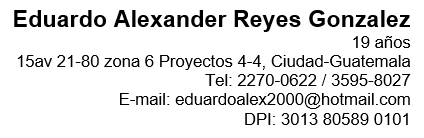
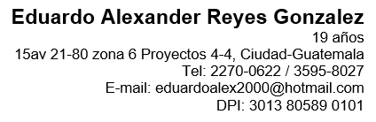

Curriculum Personal
 

ESTUDIOS
Año Titulo Bachillerato en Ciencias y letras con Orientación en Computación
2016 - 2017 Instituto Nacional de Bachillerato en Computación
Año Titulo de Nivel de Educación Básica
2013 - 2015 Instituto Nacional de Educación básica Experimental
Enrique Gómez Carrillo
Año Titulo de Nivel de Educación Primaria
2007 - 2012 Colegio Vida Abundante
Año Titulo de Nivel de Educación Pre-Primaria
2005 - 2006 Escuela Rosa y Carolina Agassi
Programas manejados: Word, Excel, Power Point, Access, Publisher, Cinema 4d
IDIOMAS
Español: Natal
Ingles: Basico
EXPERIENCIA LABORAL
De 01/09/2017 a 06/10/2017 Ciudad de Guatemala
Ministerio de Educación, Recursos Humanos Informática
Practicante
Tareas realizadas: Mantenimiento y reparación de Computadoras
Mantenimiento de Impresoras
Obtención de Códigos de cómputo
Actualización de programas
Instalación de Computadoras
REFERENCIAS LABORALES
Licda. Yesica Reyes
Hermana (Guatemala, Guatemala)
Nutricionista (Guatemala, Guatemala)
Teléfono 5424-1752
Alfredo Duarte
Amigo (Guatemala, Guatemala)
Área de diseño y producción en FOGEL (Guatemala, Guatemala)
Teléfono 4730-3672
Dr. Mynor Gudiel
Amigo (Guatemala, Guatemala)
Revisor de Tesis de Posgrado en PARANINFO Universitario Postgrado de Medicina
Teléfono 2288-8804
FORMACIONES ADICIONALES E INTERESES
• Fundación Carlos Slim: Desarrollador de aplicaciones móviles (2018)
Deportes Hobbies:
Ciclismo
Basketball
Desarrollo de animaciones
Ajedrez
Mantenimiento de Computadoras
Valores:
Responsabilidad
Compromiso
Puntualidad
Sinceridad
Especialización en nuevas tecnologías.
Aptitudes:
Tener ganas de trabajar
Ser un team player
Ser honesto
Ser innovador
Ser Activo.
OBJETIVOS CON LA CARRERA
Dominar lenguajes de Programacion
Mejorar al darle solucion a un problema
Obtener conocimiento
Ser mas Creativo
Cambiar mi forma de pensar las cosas.